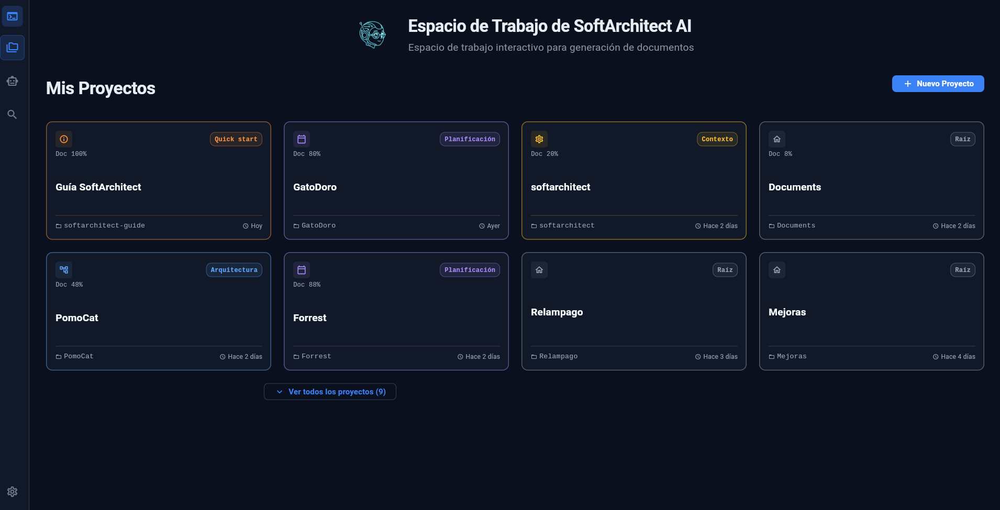
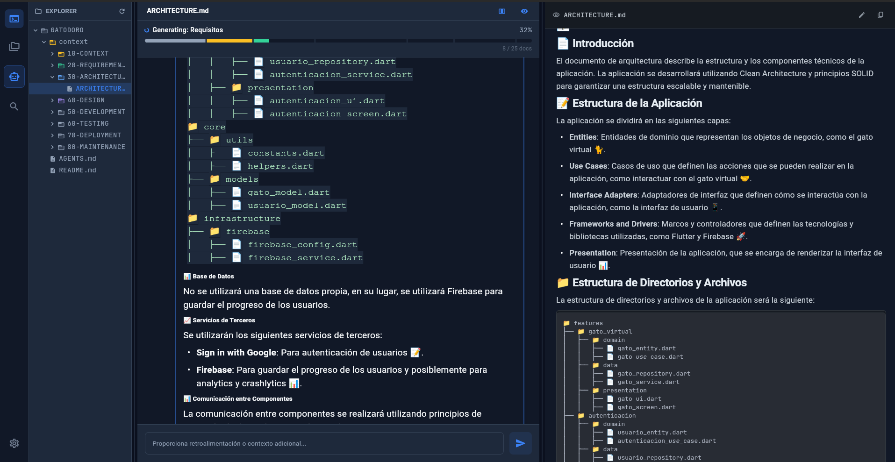
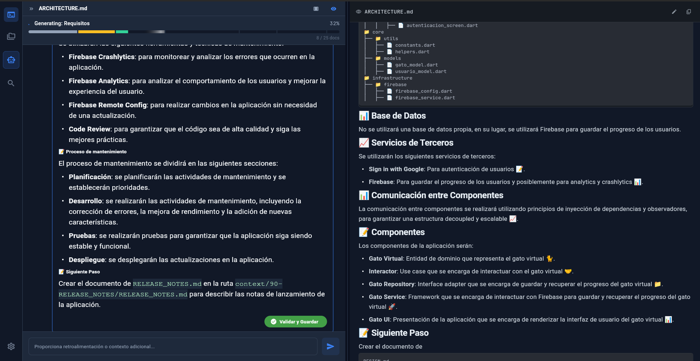
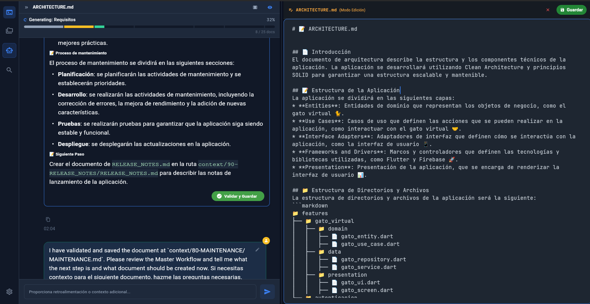
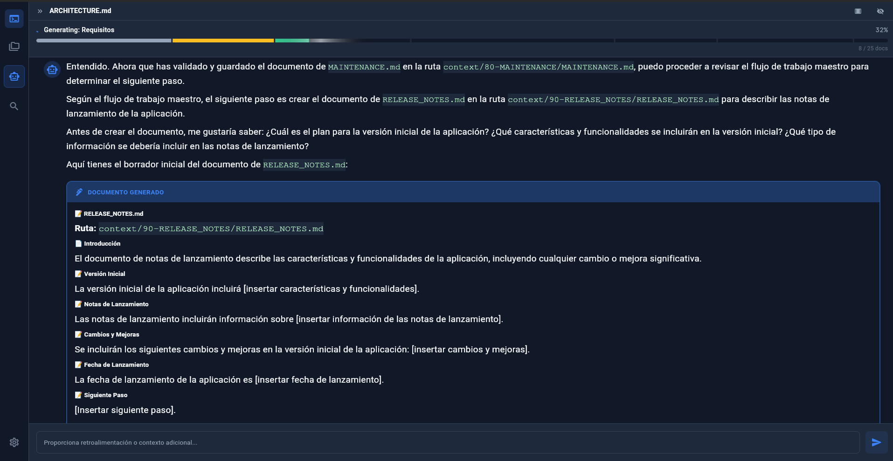
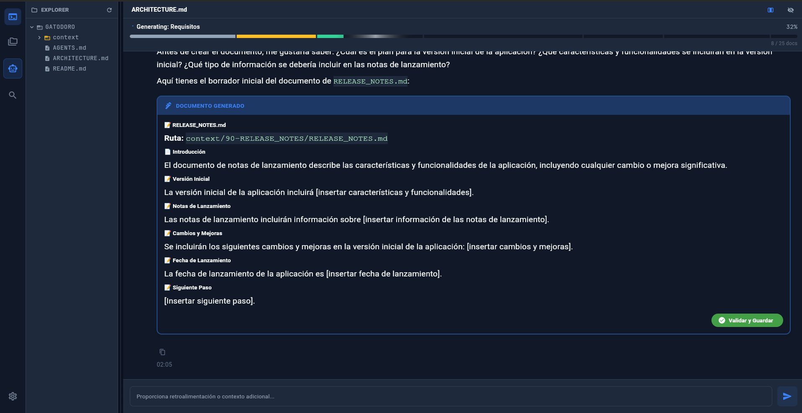

Tu Arquitecto de Software Local: De una idea vaga a la arquitectura completa antes de escribir la primera línea de código.
El lienzo en blanco detiene la innovación.
IA Local que orquesta el diseño.
Una combinación de rendimiento nativo en cliente y potencia de cálculo asíncrona en el servidor.
Aplicación Desktop (Linux/Web) con Riverpod. Velocidad nativa, gestión de caché y renderizado UI ultra fluido.
Orquestador de lógica. Gestión de estado, streaming de tokens en tiempo real y ejecución asíncrona.
Llama 3 (8B/70B): Razonamiento
avanzado.
ChromaDB: Base de datos
vectorial para inyección de contexto histórico.
El modelo de lenguaje no parte de cero. Utiliza Retrieval-Augmented Generation (RAG) para acceder a una base de conocimiento especializada.
Un entorno de desarrollo familiar con previsualización en tiempo real de Markdown, diagramas Mermaid y explorador de archivos integrado.






La IA guía al usuario a través de 6 hitos fundamentales para construir la documentación.
Definición de objetivos, visión de negocio, lenguaje del dominio y viaje del usuario.
Especificaciones técnicas, historias de usuario estructuradas en JSON y políticas de seguridad.
Estructura del sistema, diagrama de directorios (`tree`), modelo de datos y contratos de APIs.
Diseño visual, paletas de colores (HEX), flujos de usuario y guías de accesibilidad.
Planificación de Sprints, estrategia de CI/CD, infraestructura y DevOps.
Generación de archivos núcleo del repositorio y orquestación final.
Visualización del proceso de orquestación local.
"Este metraje corresponde a una versión preliminar centrada en la **validación del flujo secuencial**. Actualmente estamos refinando la **densidad técnica de los prompts** y la persistencia jerárquica para que cada documento alcance el nivel de detalle Senior mostrado en los ejemplos de la documentación oficial."
El producto es plenamente funcional y ha demostrado su viabilidad técnica durante el desarrollo del TFM.
El sistema tiene un margen de evolución masivo para convertirse en una herramienta indispensable.